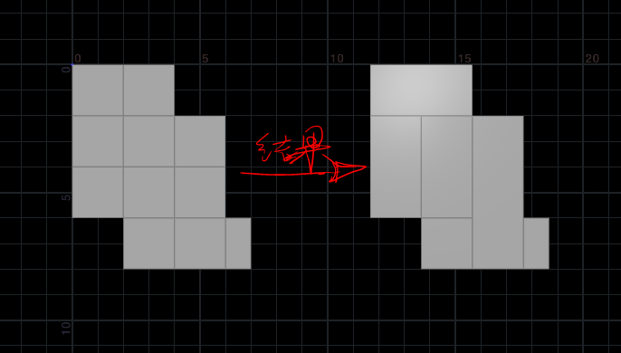

随机合并面
实现结果
让每个面查找周围的相邻面，然后合并，直到没有相邻面可以合并。

算法
如果上一步提取面的思路搞明白，这里的算法就很简单了。
整体来说是一个迭代的循环，每一次循环继承上一次循环的结果。使用foreach number作为循环体，注意要把begin method 改为Fetch Feedback。
目的还是找到每个面的相邻面，这里要随机选取一个相邻面，然后和自身面合成一个面，同时结束这一次循环。也就是只要有一个面找到了相邻面，就跳出本次循环，继续下一次循环，重复以上操作。
作者这里还是使用了上一步里相对复杂的算法。
作者算法
// VEX code
// run over:detail
// -------------------------------------------------------------------
// found_prim 在detail wrangle中，如果内部for循环找到相邻面，found_prim>0
// 如果所有面都没找到相邻面，found_prim=0，也就意味着所有面都没有相邻面了
// 我们就不再需要外部的foreach 继续运行，就可以把stop属性作为循环结束条件
int pts[];
int found_prim = 0;
int max_nm,found;
int neigh_check[],neighs[],neigh_prims[];
for (int pr = 0; pr < nprimitives(0); ++pr){
neigh_check = {};
neighs = {};
pts = primpoints(0, pr);
foreach (int pt; pts){
neigh_check = pointprims(0, pt);
append(neighs, neigh_check);
}
max_nm = max(neighs);
found = 0;
neigh_prims = {};
for (int i = 0; i <= max_nm; ++i){
found = 0;
if (pr != i) {
foreach (int nm; neighs){
if (i == nm) {
found++;
}
}
}
if (found > 0 && found%2==0) {
append(neigh_prims, i);
}
}
if (len(neigh_prims) > 0) {
setprimattrib(0, 'keep', pr, 1, 'set');
setprimattrib(0, 'keep', neigh_prims[0], 1, 'set');
found_prim++;
// 结束本次迭代，进入下一次
break;
}
}
if (found_prim == 0) {
i@stop = 1;
}
简化版
// VEX code
// run over:detail
// -------------------------------------------------------------------
// found_prim 在detail wrangle中，如果内部for循环找到相邻面，found_prim>0
// 如果所有面都没找到相邻面，found_prim=0，也就意味着所有面都没有相邻面了
// 我们就不再需要外部的foreach 继续运行，就可以把stop属性作为循环结束条件
int found_prim = 0;
for (int pr = 0; pr < nprimitives(0); ++pr){
int neigh_prims[] = polyneighbours(0,pr);
if (len(neigh_prims) > 0) {
setprimattrib(0, 'keep', pr, 1, 'set');
setprimattrib(0, 'keep', neigh_prims[0], 1, 'set');
found_prim++;
break;
}
}
if (found_prim == 0) {
i@stop = 1;
}